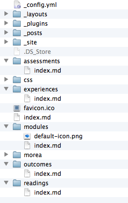

The Morea framework derives its functionality from a combination of three technologies:
GitHub and git: this technology allows sophisticated collaboration (through branching, forking, and pull requests),evolution (by cloning of the prior semester's repository when starting a new semester), access control (through private repos with public gh-pages branches), website hosting, and cloud-based content storage.
Jekyll: this technology makes it possible to cleanly separate content (i.e. markdown) from presentation (i.e. the website and its associated HTML, CSS, and Javascript). It is possible for Morea users to create entire courses without writing any HTML.
Morea plugin and files: By far the most minor of the three technologies, the Morea plugin allows users to create content (such as an Outcome) with an associated ID and refer to it in multiple places (such as in multiple modules.) In addition, the Morea plugin allows users to create content (such as an Outcome) and have it be presented in multiple pages (such as in its associated modules, associated assessments, and in the Outcomes page).
For more information on GitHub, Git, or Jekyll, consult their project sites. This page provides a brief orientation to the design of the Morea-specific code.
The Morea plugin is a Jekyll plugin written in Ruby and located in the basic-template _plugins directory in the file MoreaGenerator.rb.
The plugin code is pretty straightforward, though not well-written. (Part of the attraction of developing the Morea Framework for me was the chance to try Ruby, so MoreaGenerator is my first and (at the time of writing) only Ruby program I have ever written.) I would gratefully accept pull requests that improve the structure and use of Ruby language idioms.
The plugin works as follows:
The generate() method reads in all of the files in the morea/ directory. All files that end in the extension .md are assumed to be "real" Morea files, in that they should have morea IDs and so forth. These files are processed in the processMoreaFile() method. Other files not ending in .md are just handed off to Jekyll for standard processing through the processNonMoreaFile() method.
The processMoreaFile() method creates a new MoreaPage instance corresponding to each file. A MoreaPage is just a regular Jekyll Page with some additional state, such as the related outcomes, referencing assessments, referencing modules, etc.
The processMoreaFile() method also figures out the type of the instance (i.e. Module, Outcome, Reading, Experience, or Assessment) and updates site variables that hold all of the defined Morea instances of each type. In the case of Modules, there is a special instance called ModulePage that is created.
There is data validation done in both processMoreaFile() (where each page is checked for required YAML front matter, such as a moreaid field) and in the generate() method (after all of the pages are read in, we check to make sure that a reference to a moreaid has an associated instance and so forth.
If we have read in all of the files and didn't detect any data validation errors, then the plugin ends normally after printing out some summary statistics. If any fatal data validation errors occur, then the plugin prints out a message indicating the problem and calls exit to terminate Jekyll immediately. Though experience, I've found it's more user friendly to "fail fast" and force you to fix errors right away.
The MoreaGenerator plugin processes the morea/ directory but doesn't control the layout and appearance of the site. That part is done outside the morea/ directory, primarily through a set of index.md files illustrated below:

You can see that there is a top-level index.md file (below favicon.ico) which becomes the home page for the site. Then, there are five directories (modules, outcomes, readings, experiences, assessments) each with their own index.md file. Each of these index.md files gets processed by Jekyll to produce the corresponding page in the site.
Most of the index.md files have a very similar structure. Here's the one from the readings directory:
---
layout: default
title: Readings
---
<div class="container">
<h1>Readings and other resources <small>in module order</small></h1>
</div>
{% for module in site.morea_module_pages %}
{% if module.morea_coming_soon != true and module.morea_readings.size > 0 %}
<div class="{% cycle 'section-background-1', 'section-background-2' %}">
<div class="container">
<h2><small>Module:</small> <a href="{{ site.baseurl }}{{ module.module_page.url }}">{{ module.title }}</a></h2>
<div class="row">
{% for page_id in module.morea_readings %}
{% assign reading = site.morea_page_table[page_id] %}
<div class="col-sm-3">
<div class="thumbnail">
<h4><a href="{{ reading.morea_url }}">{{ reading.title }}</a></h4>
{{ reading.morea_summary | markdownify }}
<p>
{% for label in reading.morea_labels %}
<span class="badge">{{ label }}</span>
{% endfor %}
</p>
</div>
</div>
{% if forloop.index == 4 %}
</div><div class="row">
{% endif %}
{% if forloop.index == 8 %}
</div><div class="row">
{% endif %}
{% if forloop.index == 12 %}
</div><div class="row">
{% endif %}
{% if forloop.index == 16 %}
</div><div class="row">
{% endif %}
{% endfor %}
</div>
</div>
</div>
{% endif %}
{% endfor %}Basically, the MoreaGenerator has updated the site hashmap with key value pairs providing access to the various Morea instances. So, for example, site.morea_module_pages provides a list of all the Morea modules found during generation. In this page, we cycle through all of the modules and print out the readings associated with each module (that has readings).
The last part of the system are the themes. These are actually managed in a separate repository called bootswatch, because they are a modified version of the Bootswatch themes for Twitter Bootstrap.
For each theme, I add a few Morea-specific CSS classes to the bootswatch.less file at the bottom (such as CSS classes for the footer and to provide the alternating color backgrounds). There can also be modifications to the variables.less file. Each directory contains a file called ics311.home.html which is a kind of test file for the theme that contains bits of several Morea pages so you can see how they look.
To generate a theme, follow the instructions at Bootswatch Help. For example, to regenerate the Amelia theme, invoke grunt swatch:amelia from the command line to generate the CSS from the LESS files. After that you can display the new theme by opening the ics311.home.html file in your browser.
When I am ready to "install" the themes, I run a local script that copies them into the css/themes directory of basic-template, and commit the results.
For other users to get access to updated themes, they must run morea-merge-upstream.